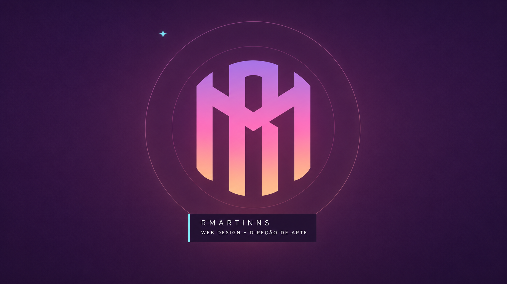

Web design · Figma · Direção de arte · Front-end
UX Designer GTA 6
Criei um site para apresentar meu trabalho como designer, com uma linguagem visual inspirada em GTA VI. Desenhei a interface no Figma, produzi a arte do projeto e desenvolvi a experiência para a web.

Do Figma ao site
Organizei a experiência em duas telas: a página inicial e uma ficha de personagem que apresenta meu perfil e minhas habilidades. Usei a abertura animada e a ação “Desbloquear personagem” para conectar as duas telas.